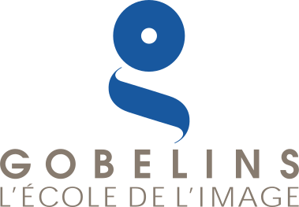

Où étudier l’animation 3D après le bac ? Les parcours possibles en 2026
Vous avez 17 ans, un carnet de croquis bien rempli et l’envie de travailler sur des films d’animation.
Lycée, Parcoursup, portfolio, métiers et studios. Ce qu’il faut savoir avant de choisir une école de jeu vidéo ou d’animation.

Vous avez 17 ans, un carnet de croquis bien rempli et l’envie de travailler sur des films d’animation.


Vous avez 17 ans, un carnet de croquis bien rempli et l’envie de travailler sur des films d’animation.
Ubisoft, Quantic Dream, Don’t Nod, Ankama.
Neuf écoles comparées sur les mêmes critères, diplômes vérifiés au RNCP et à la CTI, 14 classements et palmarès recoupés.
Huit écoles d’animation 3D et d’effets visuels comparées, 12 palmarès et classements recoupés, diplômes vérifiés au RNCP.
Six écoles de son comparées, du concours public au cursus privé en alternance.

Six voies pour étudier le jeu vidéo ou l’animation 3D sans payer plein tarif pendant cinq ans.
Note globale sur 10, insertion et réseau studios en tête des critères.
Voir la méthode de notation




Comparez deux écoles sur nos cinq critères en un clic.
Rarement. La plupart recrutent hors Parcoursup sur entretien et portfolio. La prépa intégrée Ingénieur jeu vidéo d’ISART Digital fait exception et recrute via Parcoursup.
Dès l’automne de la terminale. Les sessions d’admission commencent souvent en novembre et les places partent vite dans les écoles les mieux classées.
Game designer, level designer, game artist, animateur, programmeur gameplay, sound designer, producer, data analyst. Chaque métier a sa formation, d’où l’intérêt d’une école qui couvre toute la chaîne.
Selon les métiers, de 26 000 à 38 000 € bruts par an en France pour un premier poste, la programmation étant la mieux payée.
Oui, c’est le cœur de la sélection. Il montre du dessin d’observation, des recherches de personnages et, si possible, de premiers essais en 3D.
Un email par semaine, avec le classement du mois, les dates des journées portes ouvertes et les nouveaux comparatifs d’écoles.
Désinscription en un clic.